第 7 章 图像平滑处理#
本章解决：图像里的噪声点长什么样、怎么被平滑掉。噪声的共性是"与周围邻居差异大"，所以平滑的思路是把它调整为邻域像素的近似值——线性滤波（均值、方框、高斯）按权重加权平均，擅长压平缓起伏的高斯噪声；非线性滤波（中值）靠排序取中间值，擅长拔掉极亮极暗的椒盐噪声；双边滤波再加一条"颜色相近才参与"的约束，用来保边缘；
filter2D兜底，任何自定义核都能上。
运行环境约定
本章代码引用本目录根下的素材（picture5_gaussian.jpg、picture3.jpg、picture1.jpg），路径写作相对路径。运行时工作目录需为 数字图像处理-python 根目录，否则 imread 返回 None。原书用 image\lenaNoise.png（例 7.1、7.3~7.8，噪声图）、image\noise.bmp（例 7.2）、image\bilTest.bmp（例 7.9，黑白边缘测试图）、image\lena.bmp（例 7.10）演示，本章统一换成：picture5_gaussian.jpg（1080×1439 灰度、自带噪点）顶替 lenaNoise 与 noise，picture3.jpg（1110×736 彩色）顶替 bilTest 与 lena，例 7.7 中值滤波用 picture1.jpg（1080×1920 彩色）。代码逻辑不变，控制台打印的具体数值随图片不同而不同。另外，跟随代码 ipynb 里用的 cv_show 是未给出定义的辅助函数，运行 ipynb 前先补一句 def cv_show(name, img): cv2.imshow(name, img); cv2.waitKey()。凡图注标注"（代码实跑）"的插图（图 7.1、7.2、7.13、7.14、7.18、7.19、7.26、7.29、7.33~7.37），均由文中对应代码在本机实际运行输出（cv2.imwrite 存 PNG，多图对比为拼图加标注）；滤波核、边界处理等概念示意图仍截自原书。
7.0 本章导图#
在尽量保留图像原有信息的情况下，过滤掉图像内部的噪声（noise），这一过程称为对图像的平滑处理，所得的图像称为平滑图像。
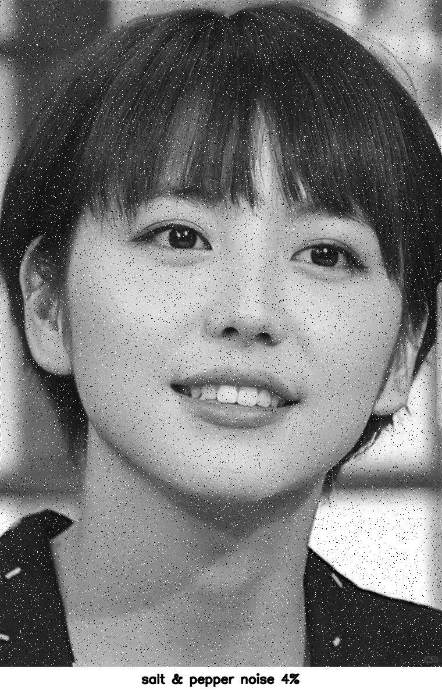
平滑处理的对象是"与周围像素点的像素值差异较大的像素点"：把它调整为周围像素点像素值的近似值。以一幅 5×5 的小图为例，大部分像素值落在 \([145, 150]\) 区间内，唯独第 3 行第 3 列的点是"29"：
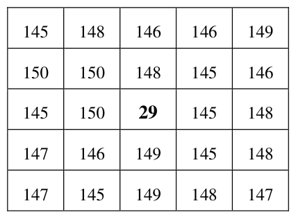
反映在图像上，周围都是灰度点，唯独该点颜色较深（黑色点），它很可能就是噪声。对第 3 行第 3 列做平滑处理后，该点的像素值由 29 变为 148：
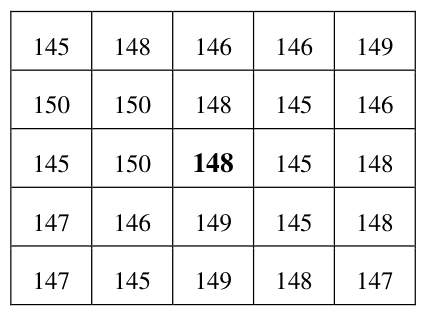
处理后图像内所有像素的颜色趋于一致。对每一个像素点都执行同样的操作，整幅图像的噪声就被去掉了。
平滑处理的基本原理：将噪声所在像素点的像素值处理为其周围临近像素点的值的近似值。取近似值的方式很多，本章介绍六种：
- 均值滤波
- 方框滤波
- 高斯滤波
- 中值滤波
- 双边滤波
- 2D 卷积（自定义滤波）
称谓上不必纠结：图像平滑处理对应英文 Smoothing Images，平滑通常伴随模糊，所以也叫图像模糊处理（Blurring Images）；滤波（Images Filtering）是更一般的说法。文献里各种称呼都有，把注意力放在理解算法本身上。
拓展：噪声的两大家族
常见噪声分两类，决定了滤波器的选型。椒盐噪声（salt-and-pepper noise）：随机出现的纯黑（0）或纯白（255）点，像椒盐撒在图上，灰度值是极端值——中值滤波是它的克星。高斯噪声（Gaussian noise）：每个像素都叠加一个服从正态分布的随机扰动，幅值小但无处不在——均值、高斯这类线性平均能把它压下去。图 7.1 的噪声图（在 picture3 灰度图上撒 4% 椒盐噪声实跑生成）黑白点密布，属于典型的椒盐噪声，图 7.2 是它的中值滤波结果。
7.1 均值滤波#
均值滤波（mean filter）：用当前像素点周围 N·N 个像素值的均值来代替当前像素值。遍历处理图像内的每一个像素点，即完成整幅图像的均值滤波。
7.1.1 基本原理#
以第 5 行第 5 列的像素点为例。通常以当前像素点为中心，对行数和列数相等的一块区域内的所有像素值求平均——3×3、5×5 都可以。下面对其周围 5×5 区域内的像素值求平均：
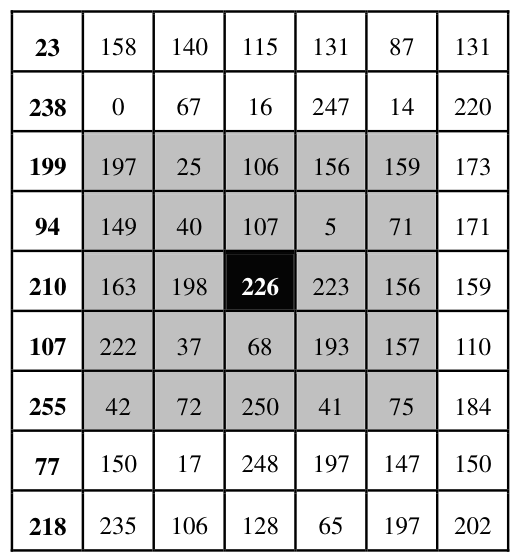
把 126 作为该点均值滤波后的像素值。对每个像素点都计算其 5×5 邻域均值，即得到整幅图的均值滤波结果。
边界点没有完整邻域。例如左上角第 1 行第 1 列的像素点（值为 23），其 5×5 邻域的一部分落在图像外部，而图像外部没有像素值。处理办法有两种。
第一种：只取图像内存在的周围邻域点求均值。计算左上角时，仅取灰色背景的 3×3 邻域：
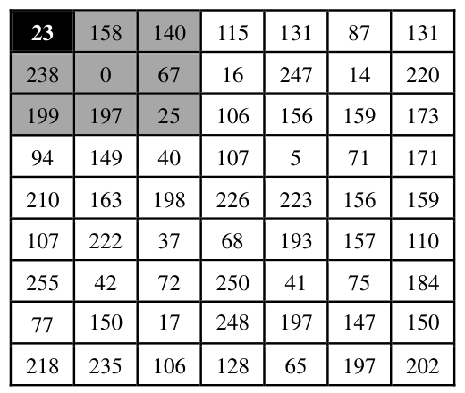
第二种：扩展当前图像的周围像素点。例如把 9×7 的图像扩展为 13×11，在新增的行列内填充不同的像素值（填什么由边界处理模式决定），再针对原始图像计算 5×5 邻域均值。OpenCV 提供了多种边界处理方式（见 7.1.2 的 borderType），按需选用。
换个视角看均值滤波：对第 5 行第 5 列的运算，相当于让该点的邻域与一个内部值都是 1/25 的 5×5 矩阵做对应相乘再求和：
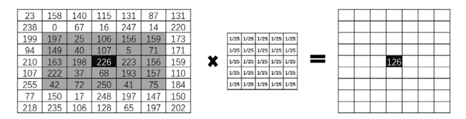
对每一个像素点都用同一个矩阵运算：
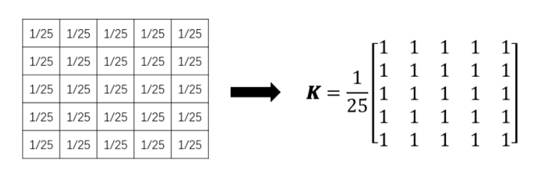
在 OpenCV 中，这个矩阵被称为卷积核（kernel），均值滤波的卷积核一般形式为：
式中 M 和 N 分别对应高度和宽度，一般情况下相等，常用的有 3×3、5×5、7×7 等。M 和 N 越大，参与运算的像素点越多，图像失真越严重。
7.1.2 函数语法#
OpenCV 实现均值滤波的函数是 cv2.blur()：
| 参数 | 含义 |
|---|---|
| dst | 返回值，均值滤波后的处理结果 |
| src | 原始图像，通道数任意，各通道独立处理；图像深度须为 CV_8U、CV_16U、CV_16S、CV_32F 或 CV_64F |
| ksize | 滤波核大小，如 (5, 5) 表示以 5×5 邻域均值作为处理结果 |
| anchor | 锚点（anchor），默认 (-1, -1)，表示计算均值的点位于核的中心，一般用默认值 |
| borderType | 边界样式（border type），决定以何种方式处理边界，一般用默认值 |
其中 ksize=(5, 5) 时对应的卷积核就是上面的 \(K=\frac{1}{25}\) 全 1 矩阵。borderType 的可选值如表 7-1。
表 7-1 borderType 值
| 类型 | 说明 |
|---|---|
| cv2.BORDER_CONSTANT | iiiiii|abcdefgh|iiiiiii，填充特定值 i |
| cv2.BORDER_REPLICATE | aaaaaa|abcdefgh|hhhhhhh，复制边界像素 |
| cv2.BORDER_REFLECT | fedcba|abcdefgh|hgfedcb，以边界为轴镜像（含边界） |
| cv2.BORDER_WRAP | cdefgh|abcdefgh|abcdefg，平铺循环 |
| cv2.BORDER_REFLECT_101 | gfedcb|abcdefgh|gfedcba，以边界为轴镜像（不含边界） |
| cv2.BORDER_TRANSPARENT | uvwxyz|absdefgh|ijklmno |
| cv2.BORDER_REFLECT101 | 与 BORDER_REFLECT_101 相同 |
| cv2.BORDER_DEFAULT | 与 BORDER_REFLECT_101 相同（默认值） |
| cv2.BORDER_ISOLATED | 不考虑 ROI（Region of Interest，感兴趣区域）以外的区域 |
anchor 和 borderType 通常都用默认值，所以 cv2.blur() 的一般形式为：
拓展：blur 的真身是归一化方框滤波
官方文档对 cv2.blur() 的定义就是"normalized box filter"，与 cv2.boxFilter(src, -1, ksize, anchor, normalize=True, borderType) 完全等价。实测（512×512 噪声图）：boxFilter(o, -1, (5,5), normalize=1) 与 blur(o, (5,5)) 的输出逐像素相等，(a == b).all() 为 True。另注意 blur 与 boxFilter 都不支持 BORDER_WRAP，传了会报错。
7.1.3 程序示例#
【例 7.1】读取一幅噪声图像，使用 cv2.blur() 进行均值滤波，显示原始图像和去噪图像。
# ===== 7.1 例 7.1：均值滤波去噪 =====
import cv2
o = cv2.imread("picture5_gaussian.jpg") # 读取待处理图像（原书 lenaNoise.png）
r = cv2.blur(o, (5, 5)) # 5×5 邻域均值滤波
cv2.imshow("original", o) # 显示原始（噪声）图像
cv2.imshow("result", r) # 显示去噪图像
cv2.waitKey()
cv2.destroyAllWindows()
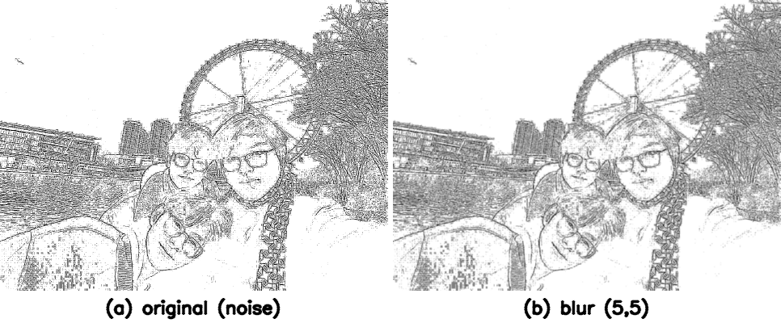
原书笔误：图 7-13 的图注
原书图 7-13 的图注写作"中值滤波示例"，但例 7.1 用的是 cv2.blur()（均值滤波），图注应为"均值滤波示例"。中值滤波在 7.4 节才登场。
【例 7.2】使用不同大小的卷积核（5×5 与 30×30）对同一幅噪声图像做均值滤波，对比结果。
# ===== 7.1 例 7.2：卷积核大小对比 =====
import cv2
o = cv2.imread("picture5_gaussian.jpg") # 原书 noise.bmp
r5 = cv2.blur(o, (5, 5)) # 5×5 核均值滤波
r30 = cv2.blur(o, (30, 30)) # 30×30 核均值滤波
cv2.imshow("original", o) # 原始图像
cv2.imshow("result5", r5) # 5×5 滤波结果
cv2.imshow("result30", r30) # 30×30 滤波结果
cv2.waitKey()
cv2.destroyAllWindows()
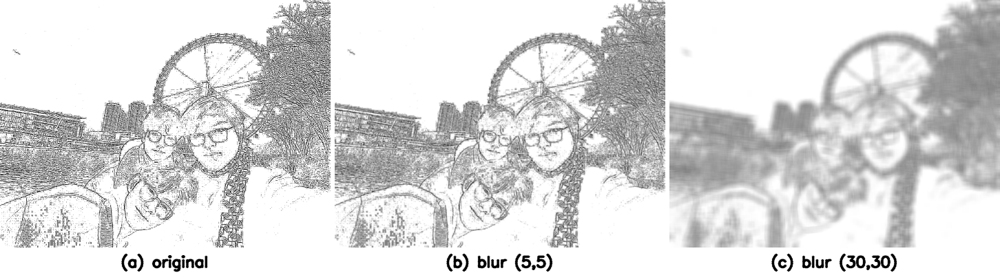
5×5 核滤波时失真不明显；30×30 核时失真较明显。规律：卷积核越大，参与均值运算的像素越多，去噪效果越好，计算时间越长，失真也越严重。实际处理要在失真和去噪效果之间取得平衡，选取合适大小的卷积核。
7.2 方框滤波#
方框滤波（box filter）与均值滤波的不同在于：不计算像素均值，可以自由选择是否对结果进行归一化（normalization）——滤波结果是"邻域像素值之和的平均值"，还是"邻域像素值之和"，二选一。
7.2.1 基本原理#
以 5×5 邻域为例。若计算邻域像素值的均值（除以面积）：
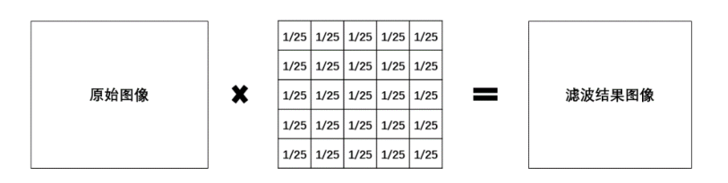
若计算邻域像素值之和（不除以面积）：
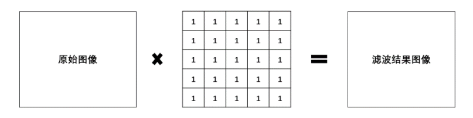
计算均值时使用的卷积核：
计算像素值之和时使用的卷积核：
7.2.2 函数语法#
OpenCV 实现方框滤波的函数是 cv2.boxFilter()：
| 参数 | 含义 |
|---|---|
| dst | 返回值，方框滤波后的处理结果 |
| src | 原始图像，通道数任意，各通道独立处理；图像深度须为 CV_8U、CV_16U、CV_16S、CV_32F 或 CV_64F |
| ddepth | 处理结果图像的图像深度（image depth），一般用 -1 表示与原始图像相同 |
| ksize | 滤波核大小，如 (3, 3) 表示 3×3 邻域 |
| anchor | 锚点，默认 (-1, -1)，即核中心，一般用默认值 |
| normalize | 是否进行归一化处理，逻辑值 1（真）或 0（假） |
| borderType | 边界样式，决定以何种方式处理边界 |
normalize 参数是方框滤波的灵魂：
- normalize=1：归一化处理，用邻域像素值的和除以面积——此时就是均值滤波；
- normalize=0：不归一化，直接使用邻域像素值的和。
一般情况下，方框滤波的卷积核可以表示为 \(K=\frac{1}{\alpha}\) 乘全 1 矩阵，其中：
针对 5×5 邻域，normalize=1 时计算的就是均值滤波，此时 cv2.boxFilter() 与 cv2.blur() 的作用一样，对应卷积核 \(K=\frac{1}{25}\) 乘全 1 矩阵；normalize=0 时直接求和，卷积核就是全 1 矩阵。
normalize=0 的风险：不归一化时，滤波得到的值很可能超过像素值范围的最大值 255，从而被截断为 255——得到一幅纯白的图像。
anchor、normalize、borderType 通常都用默认值，cv2.boxFilter() 的常用形式为：
拓展：normalize=0 并不是为了去噪
求和不归一化时结果动辄爆表变纯白，看似没用，但"邻域和"本身就是有用特征：官方文档指出，normalize=False 适合计算每个像素邻域内的各种积分特征（如局部求和、后续差分、协方差矩阵等）。也就是说，方框滤波 normalize=0 的定位是"特征提取工具"，而不是"去噪工具"。去噪请留在 normalize=1（即均值滤波）。
7.2.3 程序示例#
【例 7.3】对噪声图像做方框滤波，normalize 用默认值。
# ===== 7.2 例 7.3：方框滤波（默认归一化）=====
import cv2
o = cv2.imread("picture5_gaussian.jpg") # 原书 lenaNoise.png
r = cv2.boxFilter(o, -1, (5, 5)) # normalize 取默认值 True，等效于 blur(o,(5,5))
cv2.imshow("original", o) # 原始图像
cv2.imshow("result", r) # 方框滤波结果
cv2.waitKey()
cv2.destroyAllWindows()
r=cv2.boxFilter(o,-1,(5,5)) 省略了 normalize，相当于 r=cv2.boxFilter(o,-1,(5,5),normalize=1)，与均值滤波 r=cv2.blur(o,(5,5)) 完全等效，滤波结果图像与图 7.13 一致。
【例 7.4】normalize=0、核 5×5 的方框滤波。
# ===== 7.2 例 7.4：不归一化的方框滤波 =====
import cv2
o = cv2.imread("picture5_gaussian.jpg") # 原书 lenaNoise.png
r = cv2.boxFilter(o, -1, (5, 5), normalize=0) # 直接求 5×5 邻域像素值之和，不除以 25
cv2.imshow("original", o) # 原始图像
cv2.imshow("result", r) # 结果接近纯白
cv2.waitKey()
cv2.destroyAllWindows()
不归一化时计算 5×5 邻域像素值之和，基本都会超过 255 而被截断为 255，得到的图像接近纯白；少数点有颜色，是因为这些点周边邻域的像素值都较小，相加后仍小于 255。
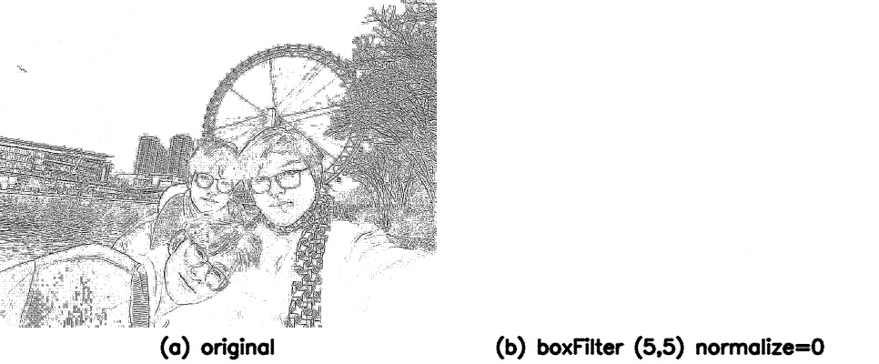
【例 7.5】normalize=0、核 2×2 的方框滤波。
# ===== 7.2 例 7.5：小核不归一化 =====
import cv2
o = cv2.imread("picture5_gaussian.jpg") # 原书 lenaNoise.png
r = cv2.boxFilter(o, -1, (2, 2), normalize=0) # 2×2 邻域求和：四个值的和不一定会超过 255
cv2.imshow("original", o) # 原始图像
cv2.imshow("result", r) # 部分像素不是白色
cv2.waitKey()
cv2.destroyAllWindows()
卷积核缩小到 2×2 后，四个像素值的和不一定大于 255，结果图像中只有部分像素点是白色的。
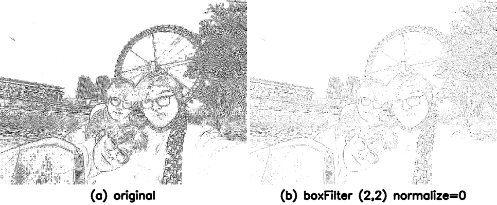
7.3 高斯滤波#
均值滤波和方框滤波的邻域内每个像素权重相等。高斯滤波（Gaussian filter）则把中心点的权重加大、远离中心点的权重减小，在此基础上计算邻域内各个像素值不同权重的和。
7.3.1 基本原理#
高斯滤波的卷积核中的值不再都是 1。例如一个 3×3 的高斯卷积核可能是：
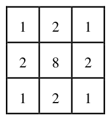
以图 7.21 最左侧图像内第 4 行第 3 列（像素值 226）的点为例，将该点邻域内的像素点按照不同的权重计算和。实际计算时使用的卷积核（归一化后的形式）：
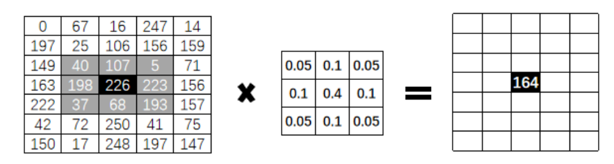
实际使用中，高斯滤波可以采用不同大小的卷积核，如 3×3、5×5、7×7。核的宽度和高度可以不相同，但都必须是奇数。
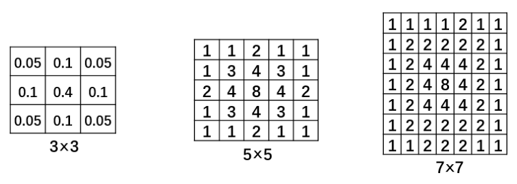
每一种尺寸的卷积核都可以有多种不同的权重比例。同样是 5×5 的卷积核，可能是下面两种不同的权重比：
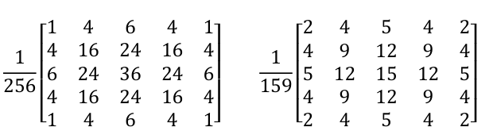
不同资料中卷积核的表示方式不同：可能写在一个表格内（图 7.23），也可能写在一个矩阵内（图 7.24）。要注意归一化问题：
- 实际计算中卷积核是归一化处理的，可表示为小数形式（图 7.23 最左侧），也可表示为分数形式（图 7.24）；
- 一些资料给出的核没有归一化（图 7.23 中间和右侧），那是为了说明问题，实际使用时往往需要归一化；
- 严格来讲，使用未归一化的卷积核进行滤波，得到的结果往往是错误的。
7.3.2 函数语法#
OpenCV 实现高斯滤波的函数是 cv2.GaussianBlur()：
| 参数 | 含义 |
|---|---|
| dst | 返回值，高斯滤波后的处理结果 |
| src | 原始图像，通道数任意，各通道独立处理；图像深度须为 CV_8U、CV_16U、CV_16S、CV_32F 或 CV_64F |
| ksize | 滤波核大小，必须是奇数（宽高可以不同） |
| sigmaX | 卷积核在水平方向（X 轴方向）的标准差（standard deviation），控制权重比例 |
| sigmaY | 卷积核在垂直方向（Y 轴方向）的标准差，可选 |
| borderType | 边界样式，决定以何种方式处理边界，一般用默认值 |
sigma 参数的行为：
- sigmaY 设为 0 时，只采用 sigmaX 的值；
- sigmaX 和 sigmaY 都是 0 时，通过 ksize.width 和 ksize.height 计算得到：
sigmaY 和 borderType 是可选参数；sigmaX 是必选参数，但可以设置为 0 让函数自己算。官方文档建议显式指定 ksize、sigmaX 和 sigmaY 三个参数，以避免将来函数修改后可能造成的语法错误。实际处理中可以显式指定 sigmaX 和 sigmaY 为 0，因此常用形式为：
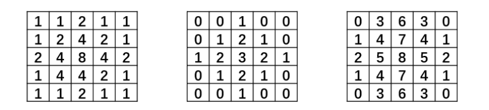
拓展：高斯核是可分离的，sigma 由核尺寸推出来的值长这样
二维高斯核在数学上等于"水平方向一维高斯核"与"垂直方向一维高斯核"的外积，所以 cv2.getGaussianKernel(ksize, sigma) 只返回一维核，二维核由它自己张成。实测 sigma 传 0 时按上式取值：ksize=3 时 sigma=0.8，一维核 [0.25, 0.5, 0.25]（即 1 2 1 / 4）；ksize=5 时 sigma=1.1，一维核 [0.0625, 0.25, 0.375, 0.25, 0.0625]（即 1 4 6 4 1 / 16）；ksize=7 时 sigma=1.4，一维核 [1, 3.5, 7, 9, 7, 3.5, 1] / 32。图 7.24 里那个 1/256 的 5×5 核，正是 [1 4 6 4 1]/16 与自身做外积的结果（中心 6×6/256=36/256）。sigma 越大，权重分布越"平"，模糊越强；sigma 越小，权重越向中心集中，滤波越温和。
7.3.3 程序示例#
【例 7.6】对噪声图像进行高斯滤波，显示滤波结果。
# ===== 7.3 例 7.6：高斯滤波去噪 =====
import cv2
o = cv2.imread("picture5_gaussian.jpg") # 原书 lenaNoise.png
r = cv2.GaussianBlur(o, (5, 5), 0, 0) # 5×5 核，sigmaX=sigmaY=0，由核尺寸自动推算
cv2.imshow("original", o) # 原始（噪声）图像
cv2.imshow("result", r) # 高斯滤波结果
cv2.waitKey()
cv2.destroyAllWindows()
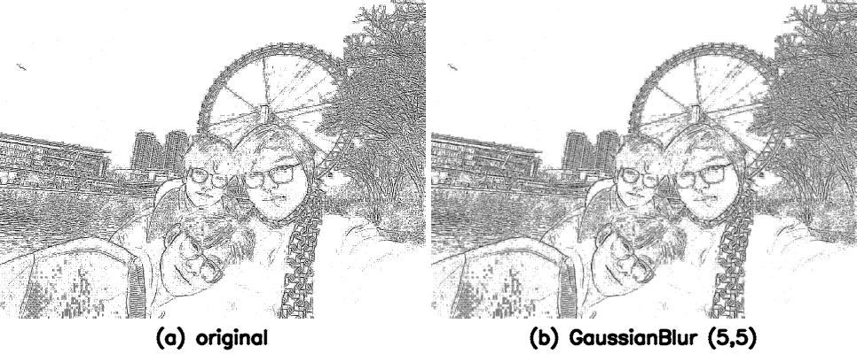
7.4 中值滤波#
中值滤波（median filter）与前面几种滤波方式根本不同：不再采用加权求均值的方式计算滤波结果，而是用邻域内所有像素值的中间值（median）来替代当前像素点的像素值。
7.4.1 基本原理#
取当前像素点及其周围临近像素点（一共奇数个像素点）的像素值，排序，把位于中间位置的像素值作为当前点的新像素值。
以图 7.27 中第 4 行第 4 列的像素点（值为 78）为例，取其 3×3 邻域：
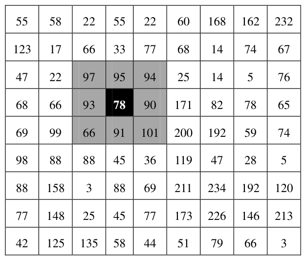
将 3×3 邻域内的像素值排序（升序降序均可），得到序列 [66, 78, 90, 91, 93, 94, 95, 97, 101]。处于中心位置（中值点）的值是 93，用它替换原来的 78，作为当前点的新像素值。
7.4.2 函数语法#
OpenCV 实现中值滤波的函数是 cv2.medianBlur()：
| 参数 | 含义 |
|---|---|
| dst | 返回值，中值滤波后的处理结果 |
| src | 源图像，通道数任意，各通道独立处理；图像深度须为 CV_8U、CV_16U、CV_16S、CV_32F 或 CV_64F |
| ksize | 滤波核大小，必须是比 1 大的奇数，如 3、5、7 等 |
7.4.3 程序示例#
【例 7.7】对噪声图像进行中值滤波，显示滤波结果。
# ===== 7.4 例 7.7：中值滤波去噪 =====
import cv2
import numpy as np
o = cv2.imread("picture1.jpg") # 原书 lenaNoise.png（本机素材本身无噪声）
rng = np.random.default_rng(7) # 固定随机种子，结果可复现
rnd = rng.random(o.shape[:2])
n = o.copy()
n[rnd < 0.02] = 0 # 2% 椒（黑点）
n[rnd > 0.98] = 255 # 2% 盐（白点），合计 4% 椒盐噪声
r = cv2.medianBlur(n, 3) # 3×3 邻域中值滤波
cv2.imshow("original", o) # 原始图像
cv2.imshow("noisy", n) # 加椒盐噪声后的图像
cv2.imshow("result", r) # 中值滤波结果
cv2.waitKey()
cv2.destroyAllWindows()
本机素材 picture1.jpg 本身是干净图像，"去噪"无的放矢，所以代码先撒 4% 椒盐噪声（造噪方法与下方拓展实测一致，default_rng(7) 固定种子保证每次运行结果相同），再做中值滤波。
由于没有做均值运算，中值滤波不存在均值滤波等滤波方式带来的细节模糊问题；噪声成分很难被选为中值，所以可以在几乎不影响原有图像的情况下去除全部噪声。代价是排序等操作带来较大的运算量。
拓展：同一噪声图，五种滤波同台实测
构造 512×512 灰度图，撒 4% 椒盐噪声后分别过五种滤波（均值/方框/高斯核均 5×5，中值核 3，双边 d=9、双 sigma=100），比较输出统计：std 为标准差，极值点为像素值等于 0 或 255 的点数，lapVar 为拉普拉斯方差（边缘与细节能量，越小越糊），MAD 为与干净原图的平均绝对差（越小去噪越好）。
| 滤波 | mean | std | 极值点 | lapVar | MAD |
|---|---|---|---|---|---|
| 噪声图（输入） | 184.53 | 67.64 | 23398 | 20931 | 4.97 |
| blur 5×5 | 184.53 | 57.02 | 7605 | 106.1 | 11.41 |
| boxFilter 5×5 (n=1) | 184.53 | 57.02 | 7605 | 106.1 | 11.41 |
| GaussianBlur 5×5 | 184.53 | 58.30 | 7867 | 155.6 | 9.40 |
| medianBlur 3 | 187.54 | 61.98 | 13030 | 990.1 | 3.25 |
| bilateral d=9 | 186.10 | 59.00 | 8961 | 2508.0 | 9.77 |
三个可复用的结论：其一，blur 与 boxFilter(normalize=1) 输出完全一致，数据坐实了两者等价；其二，三种线性滤波的均值都精确保持 184.53 不变（加权平均不改变均值），而中值、双边是非线性运算，均值会小幅漂移；其三，对椒盐噪声，中值滤波的 MAD 最小（3.25，比噪声图本身还小）且细节能量保留 990，是综合赢家——均值类滤波把黑白点"抹开"成一片灰斑，MAD 反而升到 11 以上；双边滤波细节能量最高（2508）但 MAD 仍有 9.77，印证了"双边去噪效果并不好"的判断。五种滤波的输出并排对比如图 7.36。
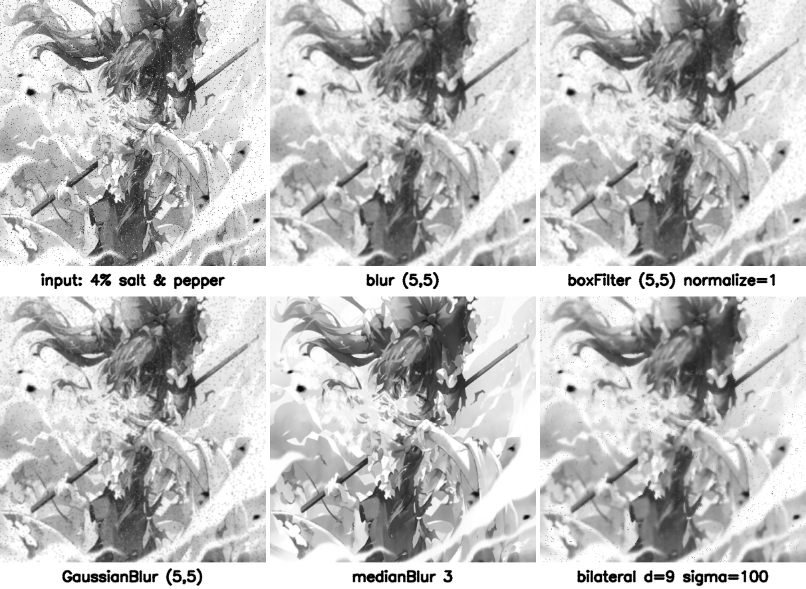
拓展：medianBlur 对图像深度的限制
官方文档规定：ksize 为 3 或 5 时，图像深度支持 CV_8U、CV_16U、CV_32F；ksize 更大时只支持 CV_8U。对 float32 深度的大核中值滤波会直接报错，需要先转成 8 位。另外中值滤波内部用 BORDER_REPLICATE 处理边界，不支持自定义 borderType——这也是它参数表里没有 borderType 的原因。
7.5 双边滤波#
双边滤波（bilateral filter）是综合考虑空间信息和色彩信息的滤波方式，在滤波过程中能够有效地保护图像内的边缘（edge）信息。
7.5.1 基本原理#
前面介绍的滤波方式基本都只考虑空间权重信息，计算方便，但在边缘信息的处理上存在较大问题。以一幅左黑右白、中间有明显边缘的图像为例：
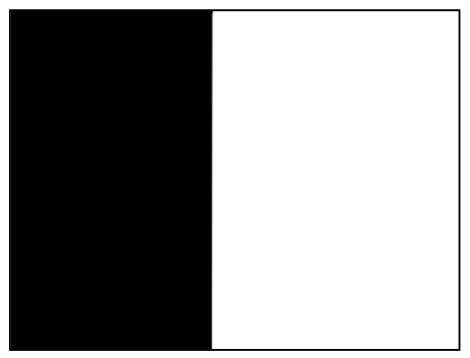
均值滤波、方框滤波、高斯滤波都会计算边缘上各像素点的加权平均值，从而模糊边缘信息：
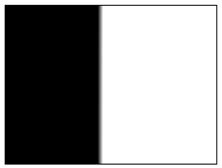
边界模糊是"对邻域像素取均值"的必然结果——单纯考虑空间信息，就会造成边界模糊和部分信息丢失。
双边滤波在计算某一个像素点的新值时，同时考虑两个维度：
- 距离信息（空间）：距离越远，权重越小；
- 色彩信息：色彩差别越大，权重越小。
两个权重综合起来，双边滤波既能有效去除噪声，又能较好地保护边缘信息。当处在边缘时，与当前点色彩相近的像素点（颜色距离很近）会被给予较大的权重；与当前点色彩差别较大的像素点（颜色距离很远）权重较小，极端情况下权重为 0，直接忽略该点——边缘就这样被保住了。
以图 7.32 为例，图 (a) 原始图像左侧白色（255）、右侧黑色（0）；图 (b) 是均值滤波的可能结果，仅考虑空间信息，边缘两侧各取均值变成灰色（128）；图 © 是双边滤波的可能结果：
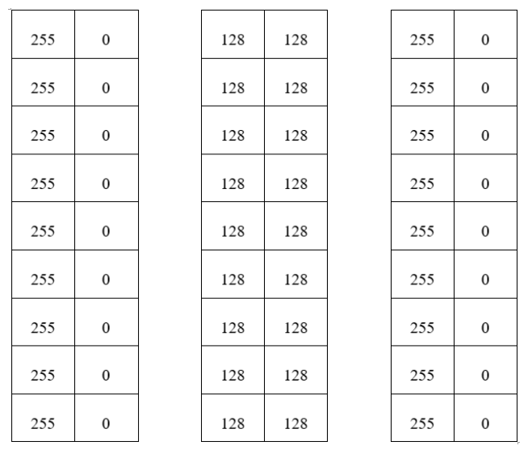
计算左侧白色区域边缘点的滤波结果时：白色的点权重大；黑色的点色彩差异大（颜色距离很远——注意是颜色值的距离，不是像素点之间的物理距离），权重可设为 0。于是左侧边缘滤波后仍是白色。计算右侧黑色区域边缘点时同理：黑色的点权重大，白色的点权重设为 0，滤波后仍是黑色。
原书笔误：保留的是"右侧"边缘
原书在讲完右侧黑色区域后写"因此，双边滤波后，左侧边缘得到保留"，结合上下文此处应为右侧边缘得到保留（左侧边缘在上一段已经说过）。
7.5.2 函数语法#
OpenCV 实现双边滤波的函数是 cv2.bilateralFilter()：
| 参数 | 含义 |
|---|---|
| dst | 返回值，双边滤波后的处理结果 |
| src | 原始图像，通道数任意，各通道独立处理；图像深度须为 CV_8U、CV_16U、CV_16S、CV_32F 或 CV_64F |
| d | 空间距离参数：以当前像素点为中心的直径。非正数时自动从 sigmaSpace 计算得到 |
| sigmaColor | 颜色差值范围：与当前点像素值差值小于 sigmaColor 的点才能参与滤波 |
| sigmaSpace | 坐标空间中的 sigma 值：越大说明越多点能参与滤波计算 |
| borderType | 边界样式，一般用默认值 |
参数细节：
- d 较大（d>5）时滤波速度较慢。实时应用推荐 d=5；较大噪声的离线滤波可选 d=9；
- sigmaColor 越大，周围有越多像素点参与运算；为 0 时滤波失去意义；为 255 时指定直径内的所有点都能参与运算；
- 当 d>0 时，无论 sigmaSpace 为何值，d 都指定邻域大小；d 非正时，d 与 sigmaSpace 的值成比例。
为了简单起见，可以把 sigmaColor 和 sigmaSpace 设置为相同的值：两者较小（如小于 10）时滤波效果不太明显；较大（如大于 150）时滤波效果明显，会产生卡通效果。d=9、sigma 依次取 5、100、300 的实测对比如图 7.37。
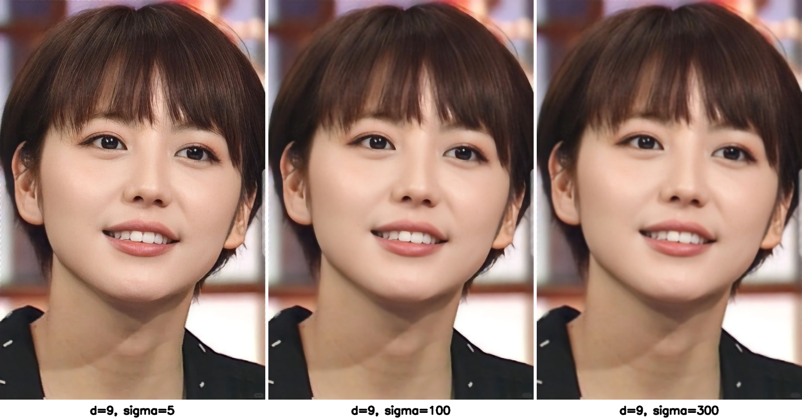
除 borderType 是可选参数外，其余参数全部必选。
7.5.3 程序示例#
【例 7.8】对噪声图像进行双边滤波，显示滤波结果。
# ===== 7.5 例 7.8：双边滤波去噪 =====
import cv2
o = cv2.imread("picture5_gaussian.jpg") # 原书 lenaNoise.png
r = cv2.bilateralFilter(o, 25, 100, 100) # 直径 25，颜色 sigma=100，空间 sigma=100
cv2.imshow("original", o) # 原始（噪声）图像
cv2.imshow("result", r) # 双边滤波结果
cv2.waitKey()
cv2.destroyAllWindows()
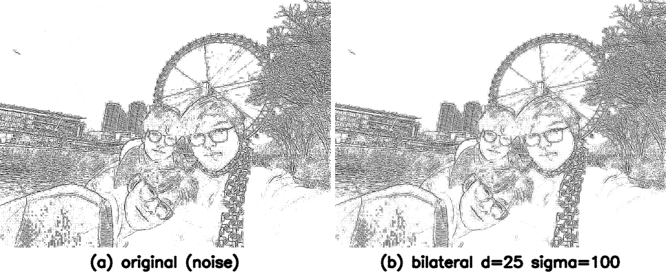
双边滤波去除噪声的效果并不好——它的优势体现在对边缘信息的保护上。
【例 7.9】对同一幅图像分别做高斯滤波和双边滤波，比较二者对边缘的处理结果。
# ===== 7.5 例 7.9：高斯 vs 双边，边缘保持对比 =====
import cv2
o = cv2.imread("picture3.jpg") # 原书 bilTest.bmp（黑白边缘测试图）
g = cv2.GaussianBlur(o, (55, 55), 0, 0) # 高斯滤波：55×55 大核
b = cv2.bilateralFilter(o, 55, 100, 100) # 双边滤波：直径 55
cv2.imshow("original", o) # 原始图像
cv2.imshow("Gaussian", g) # 高斯滤波结果
cv2.imshow("bilateral", b) # 双边滤波结果
cv2.waitKey()
cv2.destroyAllWindows()
原书代码瑕疵：链式赋值 g=r=cv2.GaussianBlur(...)
原书例 7.9 的代码写作 g=r=cv2.GaussianBlur(o,(55,55),0,0)，把同一个结果同时赋给 g 和 r，而 r 之后并未使用。功能上不出错，但属于多余写法，自己写代码时一个变量只赋一次即可。
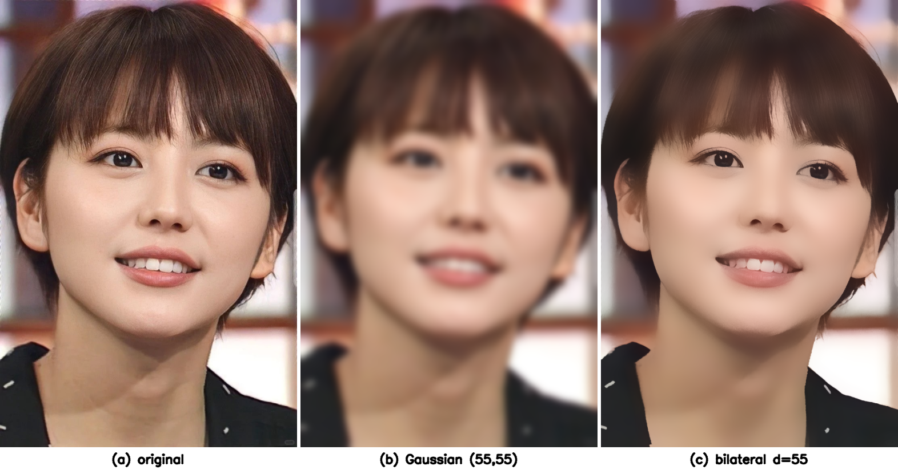
高斯滤波的边缘被模糊虚化，双边滤波的边缘得到较好保留。实测同样结论：对一幅 64×64 的黑白阶跃图，31×31 高斯滤波后边缘过渡带上有 27 个灰度变化点，而双边滤波（d=31）只有 17 个——双边滤波的边缘明显更"陡"。
拓展：OpenCV 还有更强的去噪家族 fastNlMeansDenoising
本章的滤波都是"局部邻域"运算。OpenCV 的 photo 模块还提供非局部均值去噪系列：cv2.fastNlMeansDenoising()（灰度图）、cv2.fastNlMeansDenoisingColored()（彩色图）、cv2.fastNlMeansDenoisingMulti()（视频序列）。它在全图范围内寻找与当前块相似的块做加权平均，去噪能力远强于本章的高斯/双边，且参数 h、hColor 直接控制去噪强度，代价是计算更慢。椒盐+高斯混合噪声的实战中，它常与中值滤波互为备选。
7.6 2D 卷积#
OpenCV 提供的多种滤波方式中，大多数卷积核都有一定灵活性，能方便地设置核的大小和数值。但有时希望使用特定的卷积核实现卷积操作——例如一个"外圈全为 6、内圈为 33、中心为 66"再整体乘 1/426 的核，或一个"外圈全为 5、内圈为 12、中心为 15"再整体乘 1/201 的核。前面介绍过的滤波函数都无法把卷积核确定为这类特定形式，这时要使用 OpenCV 的自定义卷积函数。允许用户自定义卷积核实现卷积操作的函数是 cv2.filter2D()：
原书笔误：第二个示例核的 1/201 应为 1/191
该 5×5 核的元素为 16 个 5、8 个 12、1 个 15，总和 16×5 + 8×12 + 15 = 191，归一化系数应为 1/191。原书排版为 1/201，按 1/201 加权的话核元素之和不为 1（会整体变亮约 5%）。归一化系数必须让核内所有权重的和等于 1。
| 参数 | 含义 |
|---|---|
| dst | 返回值，滤波后的处理结果 |
| src | 原始图像，通道数任意，各通道独立处理；图像深度须为 CV_8U、CV_16U、CV_16S、CV_32F 或 CV_64F |
| ddepth | 处理结果图像的图像深度，一般用 -1 表示与原始图像相同 |
| kernel | 卷积核，一个单通道数组；想让彩色图每个通道用不同的核，必须先拆分通道分别操作 |
| anchor | 锚点，默认 (-1, -1)，即核中心，一般用默认值 |
| delta | 修正值，可选项；存在时在基础滤波结果上加上该值作为最终结果 |
| borderType | 边界样式，通常用默认值 |
anchor、delta、borderType 通常都用默认值，常用形式为：
【例 7.10】自定义一个 9×9、所有权重相等（1/81）的卷积核，通过 cv2.filter2D() 对图像滤波。
# ===== 7.6 例 7.10：自定义卷积核 =====
import cv2
import numpy as np
o = cv2.imread("picture3.jpg") # 原书 lena.bmp
kernel = np.ones((9, 9), np.float32) / 81 # 9×9 全 1 核，除以 81 归一化，权重和为 1
r = cv2.filter2D(o, -1, kernel) # 用自定义核对图像做滤波
cv2.imshow("original", o) # 原始图像
cv2.imshow("result", r) # 滤波结果（9×9 邻域均值效果）
cv2.waitKey()
cv2.destroyAllWindows()
借助 numpy 的 ones() 函数创建该核：kernel = np.ones((9,9), np.float32)/81。此程序将原始图像以 9×9 邻域做均值滤波，运行结果如图 7.35。
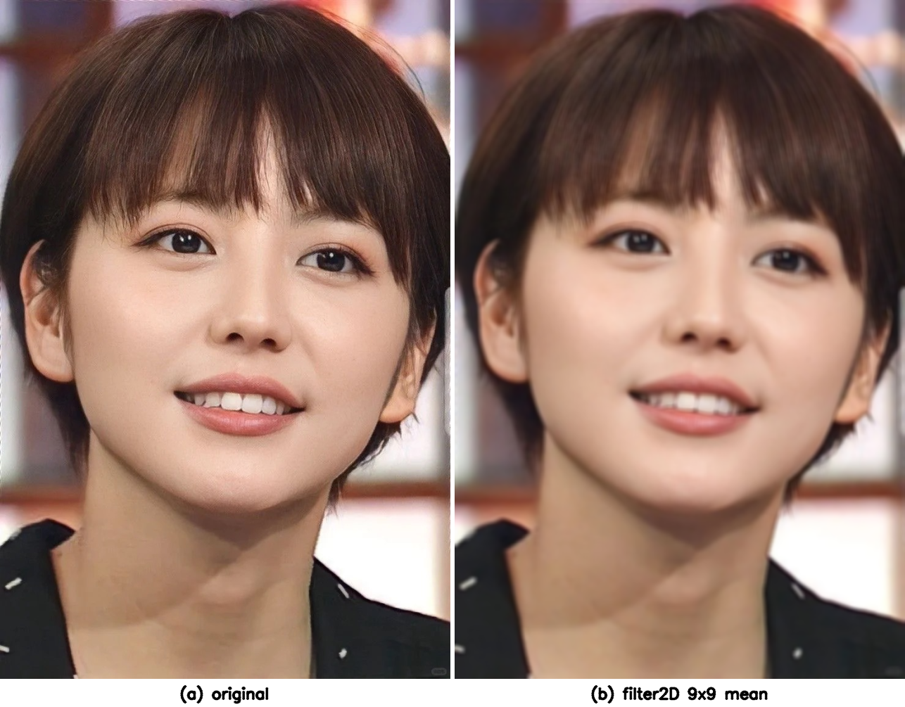
本例的核比较简单，效果与均值滤波一致；实际应用中可以定义更复杂的卷积核实现自定义滤波。
原书笔误：9×9 核对应的均值滤波是 (9,9) 不是 (5,5)
原书结尾写"该滤波操作与直接使用均值滤波语句 r=cv2.blur(o,(5,5)) 的效果是一样的"。9×9、权重 1/81 的核对应的均值滤波语句应为 r=cv2.blur(o,(9,9))，核尺寸对不上。
拓展：filter2D 做的是"相关"不是"卷积"
官方文档明确：filter2D 计算的是相关（correlation），核不翻转；严格数学意义上的卷积（convolution）要求先把核旋转 180°（cv2.flip(kernel, -1)）再作相关。核对称时（均值核、高斯核）二者结果完全一样；核不对称时（如各种差分、锐化核）方向相反结果就不同。另外，核较大（约 11×11 以上）时 filter2D 内部自动切换到 DFT 加速，性能不必担心。实测对照：对 5×5 已知数组用 3×3 均值核（对称核）做 filter2D，与逐点手算的 3×3 邻域均值在内部区域完全一致（np.allclose 为 True）。
# ===== 7.6 拓展验证：filter2D 与手算卷积对照 =====
import cv2
import numpy as np
a = np.arange(25, dtype=np.float32).reshape(5, 5) # 5×5 已知数组
k = np.ones((3, 3), np.float32) / 9.0 # 3×3 均值核（对称核）
out = cv2.filter2D(a, -1, k, borderType=cv2.BORDER_ISOLATED) # 不考虑边界外推
hand = np.zeros_like(a)
for i in range(1, 4): # 只算内部 3×3 区域，避免边界干扰
for j in range(1, 4):
hand[i, j] = a[i-1:i+2, j-1:j+2].sum() / 9.0 # 手算：3×3 窗口均值
print(np.allclose(out[1:4, 1:4], hand[1:4, 1:4])) # True：filter2D 与手算一致
坑与陷阱#
8 个容易踩的坑
- ksize 的"奇数"要求只在部分函数上：
GaussianBlur的核宽高必须都是正奇数，传偶数直接报错；medianBlur的 ksize 必须是大于 1 的奇数；blur和boxFilter没有奇数限制（2×2 合法，例 7.5 就是）。 - 参数形式不一致：
blur/boxFilter/GaussianBlur的 ksize 传 (宽, 高) 元组，medianBlur的 ksize 传一个整数。写顺手了就会把medianBlur(o,(3,3))写出来，报ksize.width相关错误。 - normalize=0 会爆白：
boxFilter不归一化时求的是邻域和，超过 255 全部截断为 255。核越大越白（5×5 几乎全白），除非刻意要"邻域和"这个特征，否则保持默认 normalize=True。 imread吃不下中文路径：路径里带中文时imread返回 None（不报错），下一步滤波抛!ssize.empty()断言错误。要么让工作目录和文件名全英文，要么用cv2.imdecode(np.fromfile(path, dtype=np.uint8), flags)读。blur/boxFilter不支持 BORDER_WRAP：其余边界模式正常，WRAP 传进去报错；默认的 BORDER_DEFAULT 等价于 BORDER_REFLECT_101，多数情况不用管 borderType。- 双边滤波的 d 与 sigmaSpace 不是叠加关系：d>0 时邻域大小由 d 说了算，sigmaSpace 只影响权重衰减；d≤0 时才按 sigmaSpace 推算邻域。d 一味取大（如 55）滤波会明显变慢，实时场景用 d=5，离线大噪声用 d=9。
- filter2D 是相关不是卷积：核不翻转。对称核（均值、高斯）没差别；非对称核（锐化、差分）方向反了结果就反。要真卷积先
cv2.flip(kernel, -1)再喂给 filter2D。 - 核越大去噪越好但失真越重：30×30 均值核能把图像滤成"色块画"（图 7.14c）。选核要在失真与去噪之间平衡，一般从 3×3 或 5×5 起步逐步试。
速览#
- 平滑处理：把与周围差异大的噪声点调整为邻域像素的近似值；别名模糊处理、图像滤波。
- 均值滤波
cv2.blur(src, ksize)：N×N 邻域取平均，核为 \(\frac{1}{M \times N}\) 乘全 1 矩阵；核越大去噪越强、失真越重。 - 边界点两种处理：只取图像内已有的邻域点求均值；或按 borderType 扩展边缘后再算。
- 方框滤波
cv2.boxFilter(src, ddepth, ksize)：normalize=1 时等价均值滤波（实测逐像素相等）；normalize=0 时直接求邻域和，结果大面积爆白。 - 高斯滤波
cv2.GaussianBlur(src, ksize, 0, 0)：中心权重大、边缘权重小；核必须奇数；sigma 全 0 时由核尺寸推（3→0.8、5→1.1、7→1.4）。 - 未归一化的卷积核只能用来说明问题，实际滤波必须归一化，否则结果错误。
- 中值滤波
cv2.medianBlur(src, ksize)：邻域排序取中间值，ksize 为大于 1 的奇数；不糊细节、椒盐噪声克星，排序开销大；ksize>5 时只支持 CV_8U。 - 双边滤波
cv2.bilateralFilter(src, d, sigmaColor, sigmaSpace)：空间距离与颜色差异双重加权，边缘保得住、去噪弱；sigma 小于 10 效果不明显，大于 150 出卡通效果。 - 2D 卷积
cv2.filter2D(src, -1, kernel)：任意自定义核（单通道 float 数组），delta 可加修正值；本质是相关运算，非对称核要真卷积需先翻转。 - 彩色图各通道用不同核：先
cv2.split拆通道，分别 filter2D，再cv2.merge合回。
术语速查#
| 英文 / 函数 | 中文 | 一句话 |
|---|---|---|
| image smoothing | 图像平滑处理 | 保留原信息的同时过滤噪声，使图像平滑 |
| noise | 噪声 | 与周围像素差异大的干扰点 |
| blurring | 模糊 | 平滑处理的伴随效果，也称模糊处理 |
| filtering | 滤波 | 允许在图像上做各种运算的通用说法 |
| mean filter | 均值滤波 | 邻域像素取平均，核为全 1 乘 1/(M×N) |
| box filter | 方框滤波 | 可选归一化的邻域求和/求平均 |
| normalized box filter | 归一化方框滤波 | cv2.blur 的真身，与均值滤波等价 |
| kernel | 卷积核 | 与邻域做加权求和的小矩阵 |
| anchor | 锚点 | 核内对准当前像素的点，默认核中心 |
| border type | 边界样式 | 图像边缘外像素的填充方式（REPLICATE、REFLECT_101 等） |
| image depth | 图像深度 | 像素的数据类型，如 CV_8U、CV_32F |
| ddepth | 目标深度 | 滤波结果图像的深度，-1 表示与原图相同 |
| normalization | 归一化 | 把滤波结果除以面积拉回像素值范围 |
| Gaussian filter | 高斯滤波 | 中心权重大、边缘权重小的加权平均 |
| standard deviation (sigma) | 标准差 | 控制高斯核权重分布形状的参数 |
| median filter | 中值滤波 | 邻域排序取中间值，非线性滤波 |
| median | 中值 | 排序后位于中间位置的值 |
| bilateral filter | 双边滤波 | 空间与色彩双重加权的边缘保持滤波 |
| edge | 边缘 | 图像中灰度突变的位置 |
| salt-and-pepper noise | 椒盐噪声 | 随机黑白点噪声，中值滤波的克星 |
| Gaussian noise | 高斯噪声 | 叠加正态分布扰动的噪声，线性平均可压制 |
| correlation | 相关 | filter2D 实际执行的运算，核不翻转 |
| convolution | 卷积 | 核翻转 180° 后再做相关 |
| cv2.filter2D | 2D 卷积 | 用自定义核做滤波的通用函数 |
| delta | 修正值 | 加在滤波结果之上的常量偏移 |